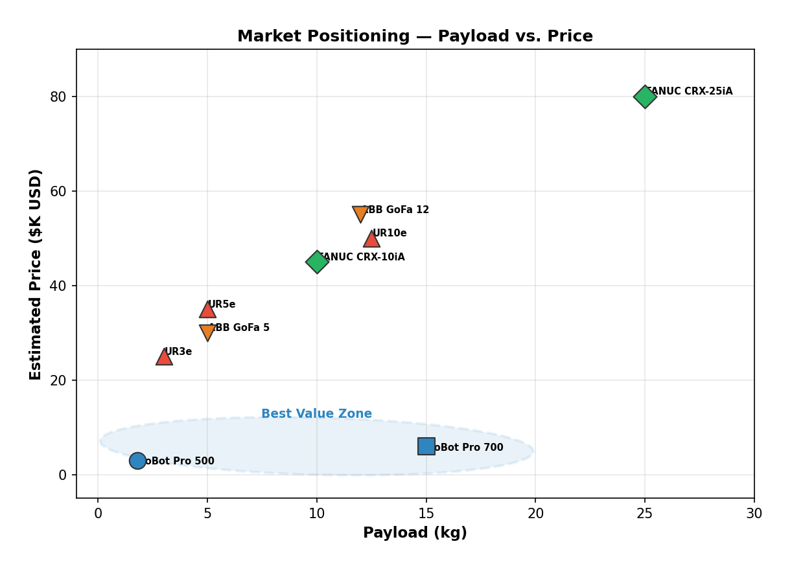
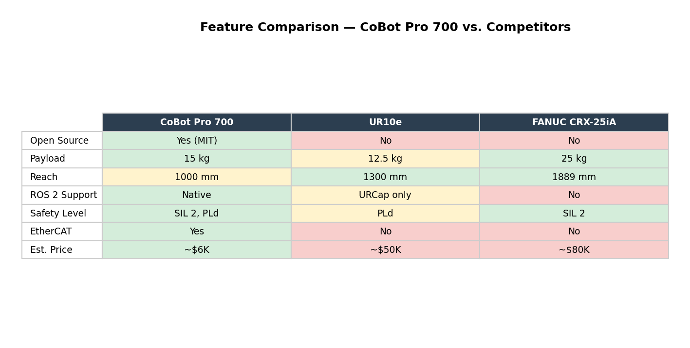
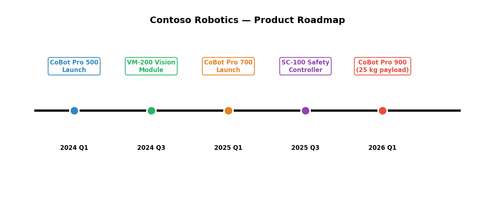

This document accompanies the official Contoso Robotics CoBot Pro 700 launch event. It outlines the market opportunity, product positioning, key differentiators, product roadmap, pricing strategy, and go-to-market plan for the CoBot Pro 700 — our flagship collaborative robot designed for high-payload industrial applications.
The global collaborative robot market is projected to reach $12.3 billion by 2028, growing at a CAGR of 32.5% from 2024. Key growth drivers include labor shortages in manufacturing (estimated 2.1 million unfilled positions in the U.S. alone by 2030), rising demand for flexible automation in small and medium enterprises (SMEs), and evolving safety standards that make fenceless human-robot collaboration commercially viable.
Contoso Robotics currently holds an 8.4% global market share in the collaborative robot segment. The CoBot Pro 700 launch is expected to accelerate share growth to 12% within 18 months by addressing the underserved 5–10 kg payload tier — a segment that accounts for 38% of new cobot deployments but is dominated by legacy products with inferior safety and ease-of-use profiles.

The CoBot Pro 700 is positioned as the safest, most versatile cobot in the 10 kg payload class. Our value proposition rests on three pillars:
Unlike competitors who rely on add-on safety modules or external safety controllers, the CoBot Pro 700 ships with the SC-100 safety controller embedded in the control cabinet. This provides dual-channel SIL-3 monitoring of all joint torques, TCP forces, and workspace boundaries — with a safety-rated response time under 8 ms. The architecture is detailed in the System Architecture Overview in the Engineering documentation.
The VM-200 is a first-party vision solution purpose-built for CoBot Pro. It integrates a 5 MP global shutter camera, structured light projector, and onboard NVIDIA Jetson module running Contoso's proprietary detection algorithms. Competitors require third-party vision systems that add $8,000–$15,000 to system cost and weeks of integration time.
CoBot Studio IDE provides a unified programming environment with drag-and-drop task building, hand-guided teaching, simulation, and advanced scripting (Python, C++, ROS 2). No competitor offers an integrated IDE with these capabilities included at no additional cost.
The CoBot Pro 700 uses an EtherCAT fieldbus running at a 1 kHz control loop rate — 4× faster than the industry-standard 250 Hz. This enables smoother trajectories, faster reaction to force events, and tighter integration with external sensors and actuators.

| Feature | CoBot Pro 700 | UR UR10e | FANUC CRX-10iA | ABB GoFa 10 |
|---|---|---|---|---|
| Payload | 10 kg | 12.5 kg | 10 kg | 5 kg |
| Reach | 700 mm | 1300 mm | 1249 mm | 950 mm |
| Repeatability | ±0.02 mm | ±0.05 mm | ±0.04 mm | ±0.05 mm |
| Integrated Safety Controller | Yes (SC-100, SIL-3) | No (software-based) | No (external PLC) | Yes (SafeMove) |
| First-Party Vision | Yes (VM-200) | No | No | No |
| ROS 2 Native | Yes | Community only | No | No |
| Control Loop Rate | 1 kHz | 500 Hz | 250 Hz | 250 Hz |
| Deployment Time | 4 hours | 8 hours | 12 hours | 10 hours |
For a more detailed competitive analysis including market share data and strategic positioning, refer to the Collaborative Robot Market — Competitive Analysis Report from Contoso Robotics Marketing.

| Milestone | Target Date | Description |
|---|---|---|
| CoBot Pro 700 General Availability | Q1 2025 | Global launch in all 23 service regions. Initial SKUs include base arm, SC-100 controller, and teach pendant. |
| VM-200 Vision Module Bundle | Q2 2025 | Pre-integrated vision bundle available as a factory option, reducing on-site integration from 2 days to 2 hours. |
| CoBot OS v4.3 Software Update | Q3 2025 | Adds pallet pattern generator, enhanced collision avoidance, and OPC UA connectivity. |
| CoBot Pro 700 HD (High-Duty) Variant | Q1 2026 | Extended-duty variant with IP67 rating and 15 kg payload for harsh environments. |
| CoBot Pro 1000 (Next Generation) | Q4 2026 | 1000 mm reach, 20 kg payload, 7 DoF, integrated force-torque sensing in every joint. |
The CoBot Pro 700 is priced to deliver best-in-class value at the mid-premium tier:
Volume pricing tiers are available for orders of 5+ units (8% discount), 20+ units (14% discount), and 50+ units (custom pricing through enterprise sales).
Confidential — Contoso Robotics Internal Use Only | Document version 1.0 | Last updated: 2025-01-18 | Contoso Robotics Marketing